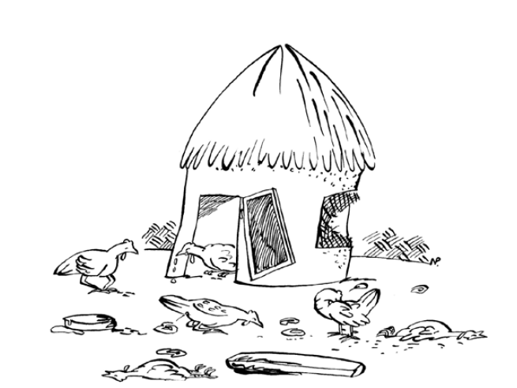

ជំងឺមាននៅគ្រប់ទីកន្លែង ហើយនឹងវាយប្រហារសត្វស្លាបគ្រប់វ័យ ដែលបណ្តាលឱ្យមានការខាតបង់យ៉ាងធ្ងន់ធ្ងរ។ ការគ្រប់គ្រងដោយប្រុងប្រយ័ត្ននឹងការពារជំងឺជាច្រើន និងសន្សំការចំណាយពីការព្យាបាល និងការសម្លាប់មេរោគ។ ជំងឺចូលទៅក្នុងហ្វូងបសុបក្សីអាចបង្ការបានតាមវិធីខាងក្រោម៖ » ផ្តល់ចំណីឱ្យមាន់ត្រឹមត្រូវ និងទឹកស្អាត ជាពិសេសសម្រាប់បក្សីតូចៗ។ » សាងសង់ជម្រកការពារខ្យល់ និងភ្លៀង។ » សម្អាតផ្ទះឱ្យបានទៀងទាត់ ហើយលាបកំបោរលើកម្រាលឥដ្ឋ និងជញ្ជាំង។ » បើចាំបាច់ ផ្តល់សំរាមស្ងួតឱ្យបានទៀងទាត់។ » កុំដាក់បក្សីច្រើនពេក។ » ប្រភេទសត្វបក្សីផ្សេងៗគ្នា ឧទាហរណ៍ មេមាន់ ទួរគី ព្រាប ទា និងសត្វស្លាបហ្គីណេ គួរតែត្រូវបានរក្សាទុកដាច់ដោយឡែក។ » ញែកកូនមាន់ចេញពីបក្សីពេញវ័យ លើកលែងតែមេមាន់។ » ចាក់វ៉ាក់សាំងកូនមាន់ប្រឆាំងនឹងជំងឺសំខាន់ៗ និងចាក់វ៉ាក់សាំងឡើងវិញប្រសិនបើចាំបាច់។ » ដាក់ឱ្យនៅដាច់ដោយឡែក និងព្យាបាលសត្វស្លាបឈឺ ប្រសិនបើថ្នាំពេទ្យមិនមានទេ សម្លាប់បក្សីឈឺ។ » ដុត ឬកប់សត្វស្លាប។ មាន់ដែលគ្រប់គ្រងមិនបានល្អនឹងមានជំងឺជាច្រើនក្នុងហ្វូង 
ការចិញ្ចឹមមាន់ច្រើនពេកក្នុងផ្ទះតូចមួយ និងទីធ្លាក្រៅផ្ទះនាំឱ្យមានអំពើអាក្រក់ដូចជាការខាំ។ ភាពចង្អៀតណែនក៏បណ្តាលឱ្យមានការបំពុលបរិស្ថានកាន់តែខ្លាំងឡើងដោយលាមកសត្វមាន់ ហើយអាចនាំឱ្យមានការរីករាលដាលនៃជំងឺ។ បក្សីពេញវ័យត្រូវការកន្លែងខាងក្រៅយ៉ាងតិច 5 ម៉ែត្រការ៉េ។ ដូច្នេះ ទុកតែលេខដែលសមល្មមនឹងកន្លែងទំនេរ។
ផ្ទះស្ងួត និងស្អាតគឺចាំបាច់សម្រាប់ជំងឺមិនរីករាលដាល ឬវិវឌ្ឍន៍។ យូរៗម្តងបន្ទាប់ពីសម្អាតផ្ទះ និងជម្រកគួរត្រូវបានលាងសម្អាតកំបោរ។ យកល្អគួរតែសម្លាប់មេមាន់ដែលស្តើងពេក ហើយមិនលូតលាស់ ឬបង្កើតពងទៀតទេ ព្រោះវាមិនធន់នឹងជំងឺបានល្អ និងអាចឆ្លងជំងឺដល់បក្សីមានសុខភាពល្អ។ ប្រសិនបើជំងឺនៅតែកើតមានក្នុងកសិដ្ឋាន សូមលុបហ្វូងសត្វទាំងមូល សម្អាត សម្លាប់មេរោគ និងសម្រាកផ្ទះមួយរយៈ (យ៉ាងហោចណាស់ពីរខែ) រួចស្តុកទុកឡើងវិញ។ ឧទាហរណ៍នៃថ្នាំសំលាប់មេរោគទូទៅគឺនៅក្នុងរូបភាពទី 57 ។ ការណែនាំអំពីរបៀបប្រើប្រាស់ថ្នាំសំលាប់មេរោគជាធម្មតាត្រូវបានសរសេរនៅលើដប និងក្រដាសតូចមួយដែលបញ្ចូលជាមួយកញ្ចប់។
ប្រភេទសត្វស្លាបផ្សេងទៀតអាចផ្ទុកជំងឺដោយមិនបង្ហាញសញ្ញាថាឈឺ។ ជាឧទាហរណ៍ សត្វទា សត្វស្លាបហ្គីណេ និងទួរគីអាចឆ្លងជំងឺទៅមេមាន់ ឬផ្ទុយមកវិញ។ មធ្យោបាយដ៏ល្អបំផុតដើម្បីជៀសវាងការរីករាលដាលជំងឺពីមួយទៅមួយប្រភេទគឺត្រូវទុកពួកវាដាច់ដោយឡែកពីគ្នានៅក្នុងទ្រុង កន្ត្រក ឬផ្ទះផ្សេងៗគ្នា។ តែងតែរក្សាសត្វស្លាបក្នុងស្រុកឱ្យឆ្ងាយពីបក្សីព្រៃតាមដែលអាចធ្វើទៅបាន។ មិនត្រូវលាយកូនមាន់ និងមាន់ពេញវ័យចូលគ្នាដើម្បីជៀសវាងការចម្លងជំងឺពីមនុស្សពេញវ័យទៅក្មេង។ កុំទិញមាន់តាមផ្លូវ ឬផ្សារទុកជាកន្លែងចិញ្ចឹម។ ពួកគេអាចឆ្លងជំងឺផ្សេងៗ។ ម្យ៉ាងទៀត មាន់ដែលអ្នកយកទៅផ្សារហើយមិនទិញក៏មិនត្រូវយកទៅស្តុកវិញដែរ ។
បក្សីដែលចិញ្ចឹមបានល្អ ទប់ទល់នឹងជំងឺបានល្អជាង។ ការចិញ្ចឹមបន្ថែម ជាពិសេសសម្រាប់កូនមាន់តូចៗ គឺជាមធ្យោបាយដ៏សំខាន់បំផុតមួយក្នុងការការពារជំងឺ។ ចំណីគួរតែត្រូវបានរក្សាទុកក្នុងកន្លែងស្ងួត និងស្អាតជានិច្ច ព្រោះវាអាចចម្លងមេរោគបានយ៉ាងងាយ។
ទឹកស្អាតចេញពីអណ្តូង មិនមែនស្រះទេ មានសារៈសំខាន់ណាស់ ដើម្បីជៀសវាងការរីករាលដាលនៃមេរោគក្នុងទឹក ដូចជា Fowl Cholera និង Avian Influenza (AI)។ ប្រសិនបើមានមេរោគ AI ខ្លាំងនៅក្នុងបរិស្ថាន ការថែទាំយ៉ាងតឹងរ៉ឹងគួរតែត្រូវបានយកចិត្តទុកដាក់ ដើម្បីចៀសវាងទឹកដែលអាចបំពុលដោយបក្សីព្រៃ។
ជំងឺមេរោគមិនមានថ្នាំសម្រាប់ព្យាបាលមាន់ទេ។ ជំងឺដូចជាជំងឺ Newcastle និងជំងឺអុតស្វាយ គួរតែត្រូវបានចាក់វ៉ាក់សាំងជាទៀងទាត់